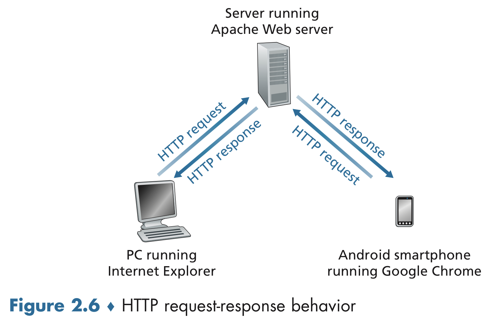
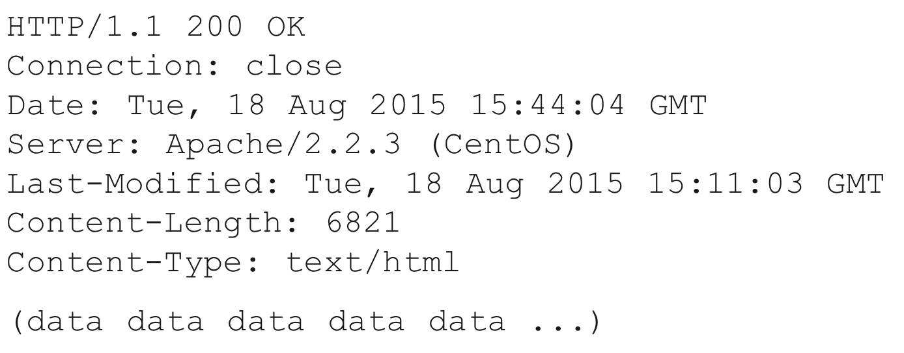
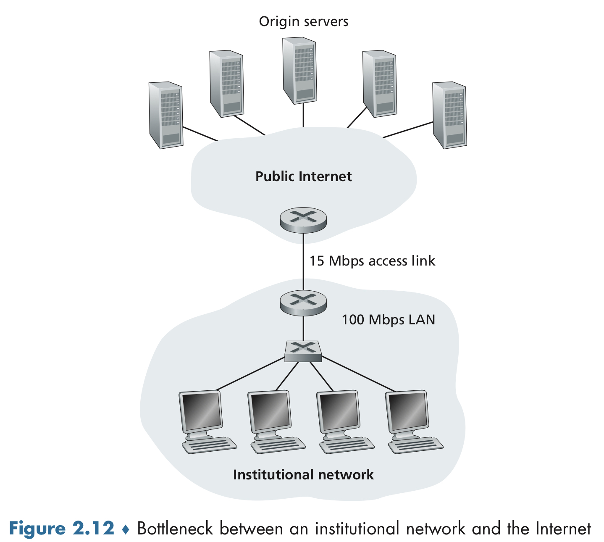
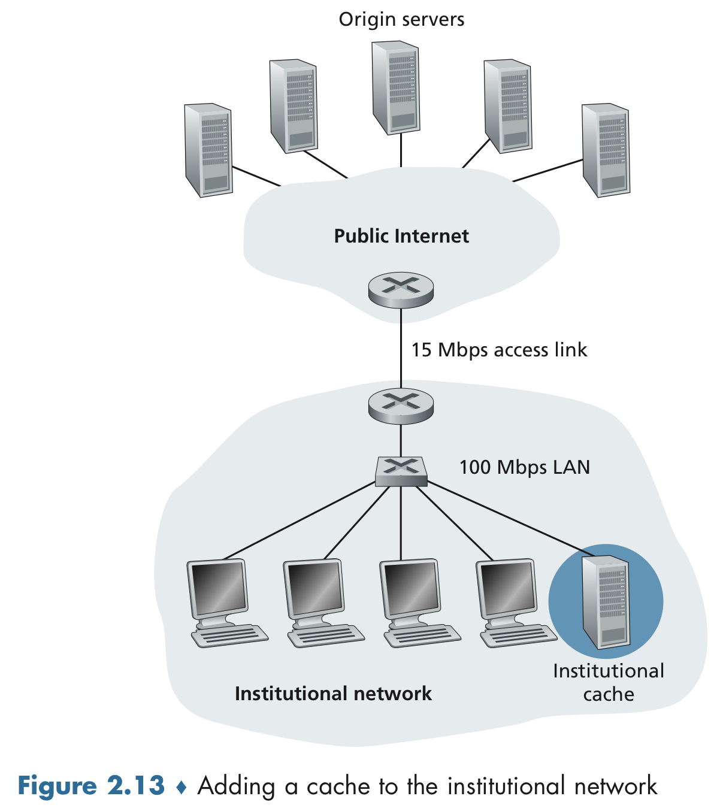

Computer Network - The Web and HTTP
1️⃣ Overview of HTTP
- HyperText Transfer Protocol (HTTP): the Web’s application-layer protocol, a.k.a. the heart of the Web.
- Web page: Document that consists of objects.
- Object: a file - such as an HTML file, a JPEG image, a Javascript file, etc.
- base HTML file: a HTML file that references the other objects in the page with objects’ URLs.
- Web browsers: Client side of HTTP, in the context of the Web.
- Web servers: Server side of HTTP, house Web objects, each addressable by a URL.
- Stateless protocol: An HTTP server maintains no information about the clients

2️⃣ Non-Persistent and Persistent Connections
HTTP with Non-Persistent Connections
Each TCP connections is closed after the server sends the object - the connection does not persist for other objects.
- Round-trip time (RTT): The time it takes for a small packet to travel from client to server and then back to the client.

HTTP with Persistent Connections
A brand-new connection must be established and maintained for each requested object. For each of these connections, TCP buffers must be allocated and TCP variables must be kept in both the client and server, which may be serving requests from hundreds of different clients simultaneously. Next, each object suffers a delivery delay of two RTTs - one RTT to establish the TCP connection and one RTT to request and receive an object.
3️⃣ HTTP Message Format
HTTP Request Message
A typical HTTP request message:

- Request line: The first line of an HTTP request message.
- Header lines: The lines after the first line of an HTTP request message.
- Host: www.someschool.edu: Specifies the host on which the object resides.
- Connection: close: The browser is telling the server that it doesn’t want to bother with persistent connections; it wants the server to close the connection after sending the requested object.
- User-agent: Specifies the user agent that the browser type that is making the request to the server.
- Accept-language: One of many content negotiation headers available in HTTP.
- HTTP methods: GET, POST, HEAD, PUT, and DELETE

- Entity body: Empty with the GET method, but is used with the POST method. An HTTP client often uses the POST method when the user fills out a form.
HTTP Response Message
A typical HTTP response message:

It has three sections: an initial status line, six header lines, and the entity body, containing the requested object itself.
- Header lines
- Connection: close: Tell the client that it is going to close the TCP connection after sending the message.
- Date: Indicates the time and date when the HTTP response was created and sent by the server.
- Server: Indicates that the message was generated by an Apache Web server.
- User-agent: Header line in the HTTP request message.
- Last-Modified: Indicates the time and date when the object was created or last modified.
- Content-Length: Indicates the number of bytes in the object being sent.
- Content-Type: Indicates that the object in the entity body is HTML text.
- Status Code
- 200 OK: Request succeeded and the information is returned in the response.
- 301 Moved Permanently: Requested object has been permanently moved; the new URL is specified in Location. The client software will automatically retrieve the new URL.
- 400 Bad Request: A generic error code indicating that the request could not be understood by the server.
- 404 Not Found: The requested document does not exist on this server.
- 505 HTTP Version Not Supported: The requested HTTP protocol version is not supported by the server.

4️⃣ User-Server Interaction: Cookies
Cookies allow sites to keep track of users.
- Four component of cookie
- a cookie header lie in HTTP response message
- a cookie header line in HTTP request message
- a cookie file kept on the user’s end system and managed by the user’s browser
- a back-end database at the Website

5️⃣ Web Caching
Web cache a.k.a. proxy server is a network entity that satisfies HTTP requests on the behalf of an origin Web server.

- The browser establishes a TCP connection to the Web cache and sends an HTTP request for the object to the Web cache.
- The Web cache checks to see if it has a copy of the object stored locally. If it does, the Web cache returns the object within an HTTP response message to the client browser.
- If the Web cache does not have the object, the Web cache opens a TCP connection to the origin server. The Web cache then sends an HTTP requests for the object into the cache-to-server TCP connection. After receiving this request, the origin server sends the object within an HTTP response to the Web cache.
- When the Web cache receives the object, it stores a copy in its local storage and sends a copy, within an HTTP response message, to the client browser (over the existing TCP connection between the client browser and the Web cache).
- Web cache can substantially reduce the response time for a client request.
- Web caches can substantially reduce traffic on an institution’s access link to the Internet.

The traffic intensity on the LAN is:
(15 requests/sec) * (1 Mbits/request) / (100 Mbps) = 0.15
whereas the traffic intensity on the access link is:
(15 requests/sec) * (1 Mbits/request) / (15 Mbps) = 1

- Content Distribution Networks (CDNs): Web caches are increasingly playing an important role in the Internet.
The Conditional GET
- The request message uses the GET method
- The request message includes an If-Modified-Since: header line.
6️⃣ HTTP/2
The primary goals for HTTP/2 are to reduce perceived latency by enabling request and response multiplexing over a single TCP connection, provide request prioritization and server push, and provide efficient compression of HTTP headers fields.
- Head of Line (HOL) blocking: A large size content may take a long time to pass through the bottleneck link, while the small objects are delayed as they wait behind the large size content.
HTTP/2 Framing
The HTTP/2 solution for HOL blocking is to break each message into small frames, and interleave the request and response message on the same TCP connection.
Response Message Prioritization and Server Pushing
Message prioritization allows developers to customize the relative priority of requests to better optimize application performance.
HTTP/3
QUIC is a new “transport” protocol that is implemented in the application layer over the bare-bones UDP protocol.
Reference
- Computer Networking 8th: A Top-Down Approach by James Kurose and Keith Ross
- Computer Network Lecture by Seungsik Choi in Incheon National University